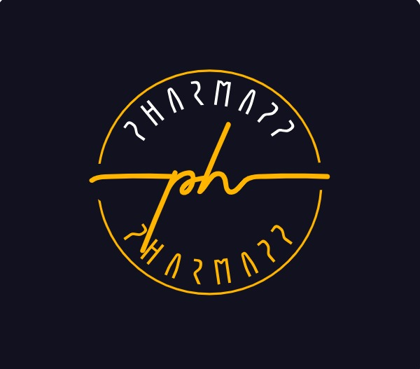

Conoce PharmaApp

Pharmapp es un aplicativo móvil el cual toma control sobre tus medicamentos, te informa sobre
los medicamentos que estás consumiendo, previene que tomes medicamentos nocivos para tus salud, y
te informa de las farmacologías más cercanas a ti, junto con los medicamentos disponibles en la tienda física.
Sobre nosotros...
Este aplicativo móvil tiene como objetivo controlar los medicamentos que los pacientes están consumiendo,
tiene como función recordarte del horario pactado con tu doctor en el cual se debe tomar dicho medicamento.
Junto con esto, te informa de manera periódica sobre las tiendas físicas (farmacologías) más cercanas a ti para que puedas
tener un fácil acceso y camino hacia ellas, teniendo como utilidad un sistema de GPS, para mayor facilidad del usuario,
y con esto, también tiene la funcionalidad de comparar los precios respectivos de los medicamentos para que el ususario
tenga una mayor comodidad económica y también facilidad, ya que, tenemos como objetivo la mayor accesibilidad y facilidad para que
el usuario pueda controlar su salud con ayuda de nosotros.
Con lo anterior, Pharmapp también tiene control acerca de los medicamentos que son nocivos para ti, ya que, debemos ser
conscientes de que todos los seres humanos somos diferentes, y cada uno puede llegar a ser alérgico a algún medicamento.